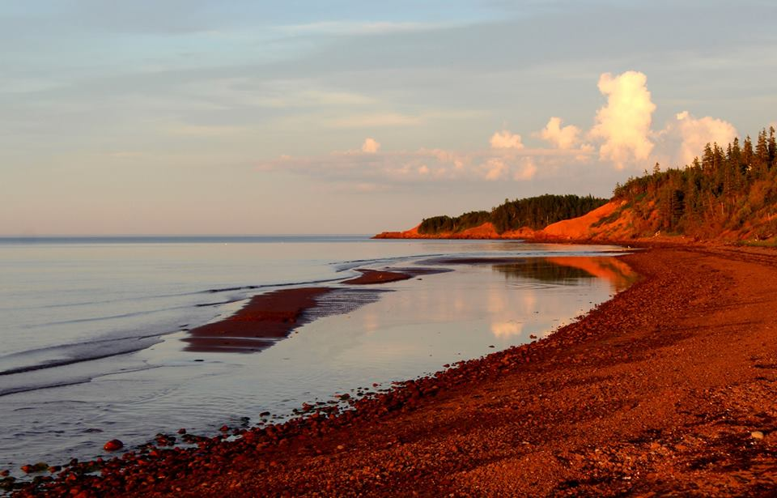
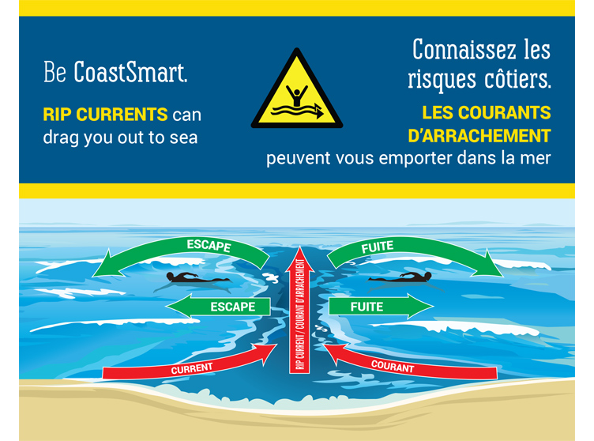

My Favourite Beaches

ABOUT OUR BEACHES
With beaches that sing and others that stun visitors with their pristine blend of rustic solitude and splendid red sand, Prince Edward Island's sandy expanses continue to receive raves from all over the world, including a nomination as one of Canada's natural wonders.
"Walking along the beautiful white sand produces an interesting sound… akin to singing, or some would say, squeaking," the CBC wrote on its website. "It's a phenomenon that scientists still don't completely understand."
Campbell's Cove Beach
Water Temperature in August
North Shore: Min. 8.9°C, Max. 25.0°C, Mean. 18.2°C
South Shore: Min. 6.7°C, Max. 23.3°C, Mean. 18.1°C
Western Shore: Min. 3.0°C, Max. 25.6°C, Mean. 17.1°C
Eastern Shore: Min. 9.7°C, Max. 24.3°C, Mean. 17.3°C
The singing beach may be caused by quartz sand - or something more mystical. Either way, the singing sands are one of numerous draws that bring visitors on PEI vacations and renting cottages in the provinces. PEI has more than 800 kms - or approximately 500 miles - of the warmest beaches north of the Carolinas. With more than 90 sandy retreats through the province, each is aesthetically unique, with its own characteristics and appeal, and each year tens of thousands come to slip off their shoes and walk for hours, or to take a swim in the pristine waters.
The province's beaches have won raves from all over the world. The New York Times recently said the beaches in PEI are far "more inviting for swimming than its northerly latitude would suggest." That means water temperatures reaching around 70 degrees - great for a refreshing dip on a warm summer day.
The British Broadcasting Corp. also recently gushed about the quality of the beaches at Cavendish, calling them, "a perfect symbol of the best of what the island province has to offer. It is beautiful. It's peaceful. It's clean. It's safe. It's soothing in ways you can't imagine; in ways you couldn't have imagined you needed soothing."
The broadcaster continued: "There is nothing wild about Prince Edward Island or its famous beach. No one has ever been eaten while playing in the surf; and there is still enough of the mighty Saint Lawrence River in the seawater that your skin isn't turned to parchment by the brine. It is a serenely beautiful place. The sunsets are not to be believed, and are never to be forgotten."
What the BBC and the CBC have caught on to is something Canadians have long recognized: the beaches located throughout the province, and often in PEI national parks, have been a factor that draws visitors back time and again.
"The beaches are so nice, just close your eyes and imagine a very hot day and feel the refreshing wind blowing gently over your skin," said Marie, a tourist from Bromont, Que. "That is what I call a natural spa."
Others dream of returning. "PEI is the most beautiful, clean province we have seen, and the beaches are something us in Alberta only see in pictures," says Lori from Edmonton. Lori says she'll return for another PEI vacation soon. Such is the draw of PEI's beautiful beaches. And one thing is certain - she won't be alone.
On our Island province you are never far from the ocean and one of our numerous spectacular beaches. From the red sand beaches on the south shore to the white sand beaches on the north shore, Prince Edward Island offers a variety of unique and enjoyable beach experiences

Swimming in the ocean is very different from swimming in a pool or lake. The strength and force of even small ocean waves can surprise beach goers who are unfamiliar with the power of the sea. When particular surf conditions are present at some of our beaches, rip currents can occur.